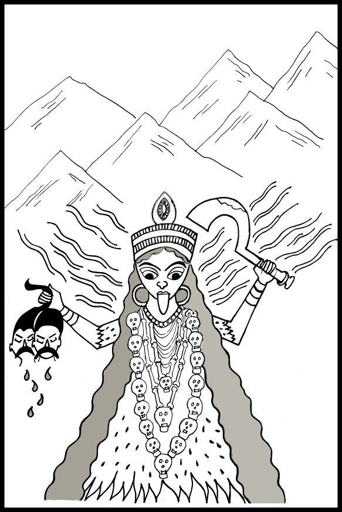

শুম্ভ নিশুম্ভের কাহিনী
পুরাকালে শুম্ভ ও নিশুম্ভ নামে দুই দৈত্য খুব বলশালী হয়ে উঠে ত্রিলোকের রাজা ইন্দ্রের সব ক্ষমতা কেড়ে নিয়েছিল। শুম্ভ নিশুম্ভের কাছে হেরে গিয়ে ইন্দ্র, সূর্য, চন্দ্র, কুবের, যম, বরুণ, বায়ু, অগ্নি এঁরা সকলেই স্বর্গ ছেড়ে আসতে বাধ্য হয়েছিলেন। তখন তাঁদের মনে পড়লো, দেবী চণ্ডী একবার আমাদের এই বর দিয়েছিলেন যে, বিপদে পড়ে তাঁকে ডাকলে তিনি এসে আমাদের সমস্ত বিপদ দূর করবেন। একথা মনে পড়তে দেবতারা হিমালয় পর্বতে গিয়ে দেবীর স্তব করতে লাগলেন।
হিমালয়ের গঙ্গাতীরে দেবতারা দেবী চণ্ডীর স্তব করছেন, এমন সময় দেবী পার্বতী সেই জাহ্নবীর জলে স্নান করতে এলেন। দেবতাদের আকুলভাবে প্রার্থনা করতে দেখে পার্বতী জিজ্ঞাসা করলেন, ‘হে দেবগণ, আপনারা কার স্তব করছেন?’ পার্বতী এই প্রশ্ন করার সঙ্গে সঙ্গে তাঁরই শরীর থেকে দেবী আদ্যাশক্তি চণ্ডী বেরিয়ে এসে বললেন, ‘শুম্ভ নিশুম্ভ নামে দুটো অসুর দেবতাদের স্বর্গ থেকে তাড়িয়ে দিয়েছে। সেইজন্য এঁরা আমারই স্তব করছেন।’ দেবী পার্বতীর শরীর থেকে বেরিয়ে এসেছেন বলে চণ্ডীর আর এক নাম হলো কৌশিকী। পার্বতীর দেহ থেকে চণ্ডী দেবী বেরিয়ে আসা মাত্র পার্বতীর গায়ের রঙ কালো হয়ে গেল, আর সেই থেকে তাঁর আর এক নাম হলো কালিকা।
চণ্ড আর মুণ্ড নামে শুম্ভ নিশুম্ভের দুজন অনুচর কৌশিকী দেবীকে দেখতে পেলে। দেখেই শুম্ভ নিশুম্ভের কাছে ছুটে গিয়ে তারা বললে, ‘মহারাজ, হিমালয় পর্বতে আমরা এক পরমাসুন্দরী দেবীকে দেখে এলাম। তাঁর রূপে সমস্ত পর্বত যেন আলো হয়ে গেছে। এরকম সুন্দর মেয়ে আমরা জীবনে আর কখনো দেখিনি। পৃথিবী ও স্বর্গের সব ভালো ভালো জিনিসই তো এখন আপনাদের। শ্রেষ্ঠ হাতী ঐরাবত, শ্রেষ্ঠ ঘোড়া উচ্চৈঃশ্রবা, পারিজাত গাছ, ব্রহ্মার রত্নখচিত আশ্চর্য বিমান, কুবের, যম, বরুণ ইত্যাদি দেবতার সব ঐশ্বর্যই তো আপনারা দখল করে নিয়েছেন। এখন সবচেয়ে সুন্দর দেবীটিকে যদি আপনাদের একজন বিয়ে করতে পারেন, তাহলে খুব ভালো হয়।’ চণ্ড মুণ্ডের কথা শুনে শুম্ভ নিশুম্ভ তাদের সুগ্রীব নামে একজন অনুচরকে বললে, ‘তুমি এখুনি হিমালয়ে যাও। গিয়ে সেই দেবীকে বুঝিয়ে-সুজিয়ে আমাদের কাছে নিয়ে এসো।’
শুম্ভ-নিশুম্ভের হুকুম পেয়ে সুগ্রীব হিমালয় পর্বতে কৌশিকী দেবীর কাছে গিয়ে বললে, ‘দেবী, এখন ত্রিভুবনের অধিপতি হচ্ছেন দৈত্যরাজ শুম্ভ। তিনিই আমাকে আপনার কাছে পাঠিয়েছেন। তিনি বলেছেন যে, এখন দেবতারাও তাঁর অধীন। আর, তিন লোকে যত শ্রেষ্ঠ রত্ন আছে, তাও তাঁরই। আপনি পরমাসুন্দরী, দৈত্যদের স্ত্রী হবারই উপযুক্ত। আপনি আমার সঙ্গে দৈত্যরাজ শুম্ভের কাছে চলুন, এবং তাঁকে কিংবা তাঁর ছোট ভাই নিশুম্ভকে বিয়ে করুন।’
দূতের কথা শুনে মনে মনে খুব হেসে গম্ভীর মুখ করে দেবী বললেন, ‘হে দূত, তুমি ঠিক কথাই বলেছ। শুম্ভ হচ্ছেন ত্রিলোকের রাজা, আর নিশুম্ভও তাঁর চেয়ে কম নন। কিন্তু আমি আবার বোকার মতো এক প্রতিজ্ঞা করে বসেছি যে, যিনি যুদ্ধে আমাকে হারাতে পারবেন তাঁকেই বিয়ে করবো, অন্য কাউকে নয়। কাজেই অসুররাজ শুম্ভ তাড়াতাড়ি এসে আমাকে যুদ্ধে হারিয়ে তারপর বিয়ে করলেই ভালো হয়।’
একথা শুনে সুগ্রীব বললে, ‘এ আপনি কী বলছেন দেবী! এখন কোনো পুরুষই নেই যে শুম্ভ নিশুম্ভের সামনে এক মুহূর্তও দাঁড়িয়ে যুদ্ধ করতে পারে, আর আপনি তো মেয়ে। ইন্দ্র ইত্যাদি সব দেবতারা এক সঙ্গে যুদ্ধ করেই শুম্ভ নিশুম্ভের সঙ্গে পেরে উঠলেন না, আর আপনি একে মেয়ে, তায় একা। আপনি আমার পরামর্শ নিন। ভালোয় ভালোয় শুম্ভ নিশুম্ভের কাছে চলুন। নইলে এসব কথা শুনলে হয়তো তাঁরা এসে আপনাকে চুলে ধরে টেনে নিয়ে যাবেন।’
দেবী বললেন, ‘তোমার কথা সবই সত্য। কিন্তু প্রতিজ্ঞা করবার সময় তো আমি এত কথা ভেবেচিন্তে প্রতিজ্ঞা করিনি। আমি যা বললাম, তুমি শুম্ভ নিশুন্তের কাছে গিয়ে তাই বলো।’
দেবীর কথা শুনে সুগ্রীবের খুব রাগ হলো। সে তখখুনি শুম্ভ নিশুম্ভের কাছে গিয়ে সব কথা বললে। সুগ্রীবের কাছে সব শুনে ভীষণ চটে গিয়ে শুম্ভ তার সেনাপতি ধূম্রলোচনকে বললে, ‘যাও তো ধূম্রলোচন; শিগগির সেই মেয়েটাকে চুলে ধরে টানতে টানতে এনে হাজির করো তো। আর, যদি কোনো দেবতা বা যক্ষ রক্ষ তাকে বাঁচাতে আসে, তবে তাকেও মেরে ফেলতে ভুলো না।’
শুম্ভের আদেশে ধূম্রলোচন তৎক্ষণাৎ ষাট হাজার সৈন্য নিয়ে দেবীর বিরুদ্ধে যুদ্ধযাত্রা করলো। হিমালয়ে এসে দেবীকে দেখতে পাওয়া মাত্র ধূম্রলোচন দূর থেকেই চেঁচিয়ে বলতে লাগলো, ‘আপনি শিগগির ভালোয় ভালোয় শুম্ভের কাছে যান। নইলে কিন্তু আমি আপনাকে চুলে ধরে টানতে টানতে নিয়ে যাবো।’
দেবী বললেন, ‘তুমি হচ্ছ দৈত্যরাজ শুম্ভের সেনাপতি, নিজেও খুব জোয়ান, তার উপর সৈন্যসামন্তও নিয়ে এসেছ অনেক। তুমি যদি ওরকমভাবে আমাকে জোর করে নিয়ে যাও, তখন আর আমি কী করতে পারি?’
এ কথা শুনে ধূম্রলোচন দেবীকে ধরবার জন্য তাঁর দিকে ছুটে যেতে লাগলো। কিন্তু তাঁকে আর দেবীর কাছে পৌঁছতে হলো না। দেবীর এক হুংকারেই সে ভস্ম হয়ে গেল। ধূম্রলোচন যেসব অসুরসৈন্য নিয়ে যুদ্ধে এসেছিল, দেবীর বাহন সিংহ একাই তাদের মেরে শেষ করে ফেললে।
দৈত্যরাজ শুম্ভ যখন শুনতে পেল যে চণ্ডী দেবী ধূম্রলোচনকে বধ করেছেন, আর দেবীর বাহন সিংহ ধূম্রলোচনের সৈন্যদের মেরে শেষ করেছে, তখন সে ভীষণ রেগে চণ্ড আর মুণ্ড নামে দুজন দুর্দান্ত অসুর সেনাপতিকে ডেকে বললে, ‘তোমরা শিগগির যাও, সেই দুষ্টা দেবীকে বেঁধে কিংবা চুলে ধরে এখানে নিয়ে আসা চাই-ই চাই। দরকার হলে তাঁর সিংহটাকে বধ করে তাঁকে আহত বা অজ্ঞান করে আনতে হলেও আনবে।’
শুম্ভের আদেশে দুই সেনাপতি চণ্ড মুণ্ড অসংখ্য অসুর সৈন্য নিয়ে অস্ত্র উঁচিয়ে দেবীর দিকে অগ্রসর হলো। হিমালয় পর্বতে অম্বিকাকে দেখে ওরা খুব উৎসাহে দেবীকে ধরবার জন্য ছুটে যেতে লাগলো। অসুরদের আসতে দেখে চণ্ডীর ভয়ানক রাগ হলো। রাগে তাঁর মুখ কালো হয়ে গেল, তিনি ভ্রুকুটি করলেন, আর সঙ্গে সঙ্গে তাঁর কপাল থেকে কালী দেবী বেরিয়ে এলেন। কালীর মূর্তি অতি ভীষণ। কঙ্কালসার দেহ, বিশাল মুখ, জিহ্বা বেরিয়ে পড়েছে, লাল চক্ষু কোটরে বসে গেছে— এমনি ভয়ংকর সে চেহারা। তাঁর গায়ে মানুষের হাড়ের অলংকার, গলায় মানুষের মুণ্ডের মালা, পরনে বাঘছাল। এক হাতে তাঁর খড়্গ, আর এক হাতে পাশ অস্ত্র। এই ভীষণ-মূর্তি দেবী চণ্ডীর কপাল থেকে বেরিয়েই ছুটে অসুর সৈন্যদের মধ্যে গিয়ে পড়লেন, আর তাদের কতকগুলিকে মেরে এবং কতকগুলিকে খেয়ে শেষ করতে লাগলেন। মাহুত আর যোদ্ধা সমেত হাতীগুলিকে পর্য্যন্ত তিনি গিলে খেতে লাগলেন। অসুর-সৈন্যের রথ, রথী, পদাতিক-সৈন্য এমন কি তাদের অস্ত্র-শস্ত্র ইত্যাদিও কালিকা চিবিয়ে, গিলে বা ভেঙে শেষ করে দিতে লাগলেন। দুই অসুর সেনাপতি চণ্ড আর মুণ্ড কালীকে লক্ষ্য করে অনেক অস্ত্র-শস্ত্র ছুড়তে লাগলো বটে, কিন্তু তাতে কালীর কিছুই হলো না, বরং তিনি এতে আরো চটে গিয়ে খড়্গ দিয়ে চণ্ড আর মুণ্ডের মাথা কেটে ফেললেন। তারপর কাটা মাথা দুটো চণ্ডীর কাছে এনে দিয়ে বললেন, ‘চণ্ড ও মুণ্ড নামে এই দুটো পশুর মাথা আমি আপনাকে উপহার দিলাম। শুম্ভ আর নিশুম্ভকে আপনি নিজেই বধ করবেন।’ দেবী চণ্ডী খুশি হয়ে কালীকে বললেন, ‘তুমি আমাকে চণ্ড মুণ্ডের মাথা কেটে উপহার দিয়েছো, এইজন্য এখন থেকে তুমি চামুণ্ডা নামে বিখ্যাত হবে।’

দৈত্যরাজ শুম্ভের দুজন প্রধান সেনাপতি ছিল চণ্ড আর মুণ্ড। এদের মৃত্যুতে শুম্ভের যে কী ভীষণ রাগ হলো তা বলা যায় না। সে তখন অসংখ্য বাছা বাছা সৈন্য আর বড় বড় সেনাপতি নিয়ে নিজেই চণ্ডীর বিরুদ্ধে যুদ্ধযাত্রা করলো। সেই ভীষণ অসুর সৈন্যদের দেখতে পেয়ে চণ্ডী তাঁর ধনুকে এত জোরে টঙ্কার দিলেন যে সমস্ত বায়ুমণ্ডল কেঁপে উঠলো। সিংহও ভীষণ গর্জন করতে লাগলো আর সেই সঙ্গে খুব জোরে ঘণ্টা বাজিয়ে চণ্ডী দেবী সেই প্রচণ্ড আওয়াজকে আরও ভয়ংকর করে তুললেন। চণ্ডীর কপাল থেকে উদ্ভূতা চামুণ্ডাও সঙ্গে সঙ্গে খুব জোরে ধনুকের টঙ্কার, গর্জন ও ঘণ্টাধ্বনি করতে লাগলেন। সেই শব্দে রেগে গিয়ে অসুর সৈন্যেরা চণ্ডী, চামুণ্ডা ও সিংহকে চারদিক থেকে ঘিরে আক্রমণ করলো। এই সময় অসুর নিধন এবং দেবতাদের মঙ্গলের জন্য ব্রহ্মা, বিষ্ণু, বরাহ, নৃসিংহ, শিব, ইন্দ্র, কার্তিক প্রভৃতি দেবতারা সেখানে এলেন, এবং প্রত্যেক দেবতার শক্তি তাদের শরীর থেকে বেরিয়ে ঠিক সেই দেবতার মতোই দেবী মূর্তি ধরে চণ্ডীর কাছে উপস্থিত হলেন। যে-দেবতার যেরকম চেহারা, যে-রকম বাহন তাঁদের দেবীরূপিনী শক্তিরও ঠিক সেইরকম চেহারা, সেইরকম বাহন হলো। প্রথমে জপমালা ও কমণ্ডলু হাতে নিয়ে, হাঁসের রথে চড়ে ব্রহ্মার শক্তি ব্রহ্মাণী এলেন। তারপর বৃষের পিঠে চড়ে ত্রিশূলধারিণী শিবের শক্তি মাহেশ্বরী এলেন। তাঁর কপালে অর্ধচন্দ্র, আর দু’হাতে ছিল তক্ষক ও অনন্তনাগের বালা। তারপর ময়ূরে চড়ে কার্তিকের শক্তি কৌমারী এলেন। তারপর গরুড়বাহনে বৈষ্ণবী শঙ্খ চক্র গদা ও ধনুক ধারণ করে উপস্থিত হলেন। তারপর বিষ্ণুর শক্তি আবার বরাহরূপ ধরে এলেন। বিষ্ণুর চতুর্থ অবতার নরসিংহের শক্তিও নারসিংহরূপে আকাশের তারা কাঁপিয়ে উপস্থিত হলেন। তারপর ইন্দ্রের শক্তি ঐন্দ্রী ঐরাবতে চড়ে এলেন। তখন সেই সকল দেবীরূপিণী দেবশক্তির মাঝখানে দাঁড়িয়ে মহাদেব চণ্ডীকে বললেন, “আমার প্রতি আপনার প্রীতি আছে, সেজন্য আপনি এদের সাহায্যে তাড়াতাড়ি অসুরদের মেরে ফেলুন।”
এ-কথা বলার সঙ্গে সঙ্গে চণ্ডী দেবীর শরীর থেকে অসংখ্য ভীষণাকৃতি চণ্ডিকাশক্তি বেরিয়ে এলেন। তাঁরাও খুব গর্জন করতে লাগলেন, আর তাঁদের চারপাশে অসংখ্য শেয়াল ঘুরে বেড়াতে লাগলো।
দেবী তখন মহাদেবকে বললেন, “আপনি আমার দূত হয়ে শুম্ভ-নিশুম্ভের কাছে যান। সেই অহংকারী দৈত্য শুম্ভ নিশুম্ভ এবং অন্যান্য দানবদের গিয়ে বলুন, ইন্দ্র আবার ত্রিলোকের রাজা হবেন এবং দেবতারাও তাঁদের মর্যাদা ফিরে পাবেন। তোমরা যদি বাঁচতে চাও তবে পাতালে পালিয়ে যাও। আর যদি অহংকারে মত্ত হয়ে যুদ্ধ করতে চাও তবে তোমরা মরবে আর শেয়াল তোমাদের মাংস খাবে।”
শিবকে দূত করে পাঠিয়েছিলেন বলে তখন থেকে দেবীর আর এক নাম হলো শিবদূতী।
চণ্ডীর কথা শুনে অসুরদের ভয়ানক রাগ হ’লো। তারা নানারকম অস্ত্রশস্ত্র নিয়ে দেবীকে আক্রমণ করলো, এবং তাঁর দিকে নানারকম অস্ত্র ছুঁড়ে মারতে লাগলো। কিন্তু দেবী চণ্ডী অনায়াসে তাঁর বাণ দিয়ে সে-সব কেটে ফেললেন। কালীও তাঁর খড়্গ আর মুগুর দিয়ে শুম্ভের সামনেই তার সৈন্যদের বধ করতে লাগলেন। ব্রহ্মাণী যেখানে যেখানে গেলেন, সেখানেই তিনি অসুরদের গায়ে কমণ্ডলুর জল ছিটিয়ে দিতে লাগলেন। সেই জল যাদের গায়ে লাগলো, তাদের গায়ের জোর আর উৎসাহ চলে গিয়ে তারা নির্জীব হয়ে পড়লো। তা ছাড়া মাহেশ্বরী ত্রিশূল দিয়ে, বৈষ্ণবী চক্র দিয়ে আর কৌমারী শক্তি দিয়ে কত যে অসুর মারতে লাগলেন তার লেখাজোখা নেই। ঐন্দ্রীর বজ্রের আঘাতেও শত শত অসুর মরতে লাগলো। দানবদের রক্তে তখন মাটি লাল হয়ে গেল। আর নারসিংহী ভয়ানক সিংহনাদ করতে করতে তাঁর ধারালো নখ দিয়ে অসুরদের বুক চিরে ফেলতে লাগলেন। দেবী শিবদূতী তখন আকাশ কাঁপিয়ে অট্টহাস্য করতে লাগলেন, আর সেই ভয়ংকর হাসির আওয়াজ শুনেই অনেক অসুর মূর্ছিত হলো, অনেক অসুর মারা পড়লো। কালীও তাঁর খড়্গ আর মুগুর দিয়ে অসুর বধ করতে লাগলেন।
অষ্টমাতৃকার আক্রমণে অসুরদের পালাতে দেখে রক্তবীজ নামে এক দানব যুদ্ধক্ষেত্রে এগিয়ে এলো। এই রক্তবীজ অতি ভয়ংকর অসুর। এর শরীর থেকে এক ফোঁটা রক্ত মাটিতে পড়লে সেই রক্ত থেকে তৎক্ষণাৎ সমান শক্তিশালী আর একটা রক্তবীজের জন্ম হোত। সেই রক্তবীজ যুদ্ধে এসেই ঐন্দ্রীকে আক্রমণ করলো। ঐন্দ্রী তাকে বজ্র দিয়ে এমন জোরে আঘাত করলেন যে রক্তবীজের শরীর ক্ষত-বিক্ষত হল, আর অনেক রক্ত ঝরে পড়তে লাগলো, সঙ্গে সঙ্গে সেই রকম বলশালী আরো বহু বহু অসুর তখুনি জন্মেই মাতৃকাদের সঙ্গে ভীষণভাবে যুদ্ধ করতে আরম্ভ করলো। ঐন্দ্রী বারবার বজ্র দিয়ে রক্তবীজদের আঘাত করতে লাগলেন, বৈষ্ণবী চক্র দিয়ে তাদের মাথা কেটে ফেলতে লাগলেন, মাহেশ্বরী ত্রিশূল দিয়ে তাদের বুক ফুটো করে দিলেন। এভাবে সকল মাতৃকাই অসংখ্য রক্তবীজকে মেরেও তাদের শেষ করতে পারলেন না, বরং রক্তবীজের সংখ্যা আরো বেড়ে যেতে লাগলো। মনে হলো যেন সমস্ত পৃথিবী রক্তবীজে ছেয়ে গেছে। এই অদ্ভুত কাণ্ড দেখে দেবতারা ভীষণ ভয় পেয়ে গেলেন। তাঁদের ভয় দেখে দেবী চণ্ডী কালীকে বললেন, “চামুণ্ডা, আমি রক্তবীজকে আঘাত করলে ওর শরীর থেকে যখন রক্ত বেরুবে, তুমি তৎক্ষণাৎ সে-রক্ত খেয়ে ফেলতে থাকো। তাহলে আর নতুন রক্তবীজ জন্মাতে পারবে না, আর আহত রক্তবীজও রক্তক্ষয় হয়ে মারা পড়বে।”
কালী তাই করলেন, চণ্ডীদেবী যখন রক্তবীজকে তাঁর সাংঘাতিক সব অস্ত্র দিয়ে আঘাত করতে লাগলেন, তখন কালী মাটিতে পড়বার আগেই সব রক্ত খেয়ে ফেলতে লাগলেন। কালীর মুখের ভিতরও অনেক রক্তবীজের জন্ম হতে লাগলো, কিন্তু কালী তাদেরও খেয়ে ফেলতে লাগলেন। এভাবে নতুন রক্তবীজ আর জন্মাতে পারলো না। চণ্ডীর অস্ত্রের আঘাতে রক্তবীজ নিহত হলো, আর মাতৃকাদের আক্রমণে এ-ভাবে সব রক্তবীজই মারা পড়লো। তখন দেবতারাও খুব আনন্দিত হলেন।
রক্তবীজের মৃত্যু দেখে শুম্ভ আর নিশুম্ভ ভয়ানক রেগে গেল। তারা বাছা বাছা সৈন্য নিয়ে চণ্ডীকে আক্রমণ করলো। নিশুম্ভ প্রথমে অনেক বাণ ছুড়লো, কিন্তু দেবী সে-সবই কেটে ফেললেন। তখন নিশুম্ভ ঢাল আর তরোয়াল নিয়ে দেবীকে আক্রমণ করলো। কিন্তু দেবী তার ঢাল তরোয়ালও টুকরো করে দিলেন। নিশুম্ভ তখন দেবীর দিকে শূল ছুঁড়ে মারলো। কিন্তু দেবী ঘুষি মেরেই সে শূল ভেঙে দিলেন। নিশুম্ভ তখন গদা ছুঁড়ে মারলো। কিন্তু দেবীর ত্রিশূলে লেগে সে গদাও চুরমার হয়ে গেল। নিশুম্ভ তখন কুঠার নিয়ে দেবীকে মারতে ছুটলো। কিন্তু দেবীর বাণের আঘাতে অজ্ঞান হয়ে সে মাটিতে পড়ে গেল।
ভাই নিশুম্ভের পতন দেখে শুম্ভ ভীষণ রেগে গিয়ে দেবীকে আক্রমণ করলো। শুম্ভ অতি ভীষণ দানব। তার আট হাতে আট রকম অস্ত্র। শুম্ভকে আসতে দেখে দেবী খুব জোরে শঙ্খ বাজালেন আর এমন ভীষণ ঘণ্টার আওয়াজ করলেন যে তা শুনেই অসুররা নিস্তেজ হয়ে পড়লো। সঙ্গে সঙ্গে কালীও তুমুল আওয়াজ করে দু হাত দিয়ে মাটি থাবড়াতে লাগলেন। শুম্ভকে দেবী বললেন, “দুষ্ট অসুর, তুই থাম্।”
শুম্ভ তখন দেবী দুর্গাকে সাংঘাতিক সব অস্ত্র দিয়ে আঘাত করতে চেষ্টা করলো। কিন্তু দেবীর বাণে তা সবই নিষ্ফল হলো, তুমুল গর্জন করে শুম্ভ আরো বাছা বাছা অস্ত্র দেবীর দিকে ছুঁড়তে লাগলো, কিন্তু দেবীর ভয়ানক শূলের আঘাতে সে মূর্ছিত হয়ে পড়ে গেল। ইতিমধ্যে জ্ঞান ফিরে পেয়ে নিশুম্ভ আবার ভীষণ পরাক্রমে দেবীকে আক্রমণ করলো, কিন্তু দেবী এবার তাঁর শূল দিয়ে নিশুম্ভের বুক চিরে ফেললেন। তাতেও কিন্তু এই ভয়াবহ দানবের শেষ হলো না। নিশুম্ভের বুকের কাটা জায়গা থেকে এক বিরাট বলশালী অসুর বেরিয়ে এলো। দেবী খড়্গ দিয়ে তারও মাথাটা কেটে ফেললেন। এইভাবে নিশুম্ভ বধ হলো। আর নিশুন্তের সঙ্গে যে অসুর সৈন্যরা ছিলো, তাদের অনেকে দেবীর বাহন সিংহের কামড়ে মরলো। কৌমারীর শক্তি অস্ত্রে, মাহেশ্বরীর ত্রিশূলে আর বৈষ্ণবীর চক্রেও অনেক অসুর সৈন্য প্রাণ হারালো। অসুরদের কেউ-কেউ পালিয়ে গেল, আর চণ্ডী ও কালী বাকি অসুরদের মেরে শেষ করলেন। প্রিয় ভাইয়ের মৃত্যু আর অসুর সৈন্যদের দুরবস্থা দেখে শুম্ভ চণ্ডী দেবীকে বললেন ‘উদ্ধতা দুর্গা, তুমি আর বেশি বলের গর্ব কোরো না। কারণ, খুব শক্তি আছে বলে তোমার যতই অহংকার থাকুক, তুমি অন্যান্য দেবীর সাহায্য নিয়ে যুদ্ধ করছো।’
চণ্ডী বললেন, “তুমি ভুল করছো। এ-জগতে শুধু আমিই আছি, আমার সহায়রূপে অন্য আর কে আছেন? এই যে দেবীদের দেখছো, এঁরা আমারই শক্তি ছাড়া আর কিছু নয়। এই দ্যাখো, এঁরা আমাতেই মিশে যাচ্ছেন।” চণ্ডী এ-কথা বলবার সঙ্গে সঙ্গে ব্রহ্মাণী প্রভৃতি দেবীরা চণ্ডীর শরীরের মধ্যে মিলিয়ে গেলেন। তখন দেবী বললেন, “এতক্ষণ এ-যুদ্ধে আমার ঐশ্বর্যের প্রভাবে আমি বহু রূপে ছিলাম, এখন তার শেষ হলো। যুদ্ধক্ষেত্রে এখন আমি একাই রইলাম। এখন তুমি স্থির হয়ে যুদ্ধ কর।”
তখন সমস্ত দেবতা ও অসুরবৃন্দের সামনে দেবী চণ্ডী আর অসুররাজ শুম্ভ এই দুজনের যুদ্ধ আরম্ভ হলো। সেই দারুণ যুদ্ধে শুম্ভ দেবীর দিকে হাজার হাজার বাণ ছুঁড়তে লাগলো, কিন্তু দেবী চণ্ডী সে-সবই কেটে ফেললেন। আবার শুম্ভও দেবীর অস্ত্র কেটে ফেললো কম নয়। কিছুক্ষণ এ-ভাবে যুদ্ধ চলার পর দেবী বাণ মেরে শুম্ভের ধনুক কেটে ফেললেন। তখন শুম্ভ শক্তি অস্ত্র হাতে নিয়ে দেবীকে আক্রমণ করলো। কিন্তু দেবীর বাণে শুম্ভের শক্তিও খণ্ড খণ্ড হয়ে গেল। তখন শুম্ভ সূর্যের মতো ঝকঝকে ঢাল আর তরোয়াল নিয়ে যুদ্ধ শুরু করলো। কিন্তু সেই ঢাল-তরোয়ালও দেবী কেটে ফেললেন।
রথে সারথি নেই, হাতে অস্ত্র নেই, শুম্ভ তখন এক ভীষণ গদা নিয়ে দেবীকে মারতে এলো। কিন্তু দেবীর বাণে সেই গদাও টুকরো টুকরো হয়ে গেল। সব অস্ত্র হারিয়ে শুম্ভ তখন দেবীর সঙ্গে খালি হাতে যুদ্ধ করতে লাগলো। তাতে দেবীর কিছুই হলো না, বরং উল্টে দেবী শুম্ভকে একেবারে মাটিতে ফেলে দিলেন। কিন্তু তবু শুম্ভ দমলো না। সে তখনি আবার দেবীকে ধরে এক লাফ দিয়ে আকাশে উঠলো। তখন শূন্যেই দেবীর সঙ্গে শুম্ভের হাতাহাতি যুদ্ধ হতে লাগলো। কিছুক্ষণ এভাবে যুদ্ধ করার পর দেবী শুম্ভকে ধরে বলের মতো শূন্যে ঘুরিয়ে দূরে মাটিতে ছুঁড়ে ফেলে দিলেন। কিন্তু তবু শুম্ভ মরলো না। সে আবার গা ঝাড়া দিয়ে উঠে ঘুষি বাগিয়ে দেবীকে মারতে এলো। তখন দেবী তার শূল শুম্ভের বুকে বিঁধিয়ে তাকে বধ করলেন।
শুম্ভের মৃত্যুর সঙ্গে সঙ্গে সমস্ত পৃথিবী যেন সুস্থ হলো, প্রসন্ন হলো। আকাশ পরিষ্কার হয়ে গেলো। আকাশে উল্কাবৃষ্টি বন্ধ হলো, নদীগুলি শান্ত হয়ে নিজের নিজের গতি পথে চলতে লাগলো, দেবতারা আনন্দ করতে লাগলেন, গন্ধর্বরা গান করতে লাগলেন, অপ্সরারা নাচলেন, যজ্ঞের অগ্নি আবার জ্বলে উঠলো। আর অগ্নি, ইন্দ্র প্রভৃতি সকল দেবতা সমস্বরে দেবীর স্তুতি করে বলতে লাগলেনঃ
তুমি স্বর্গ ও মুক্তিদায়িনী তোমার প্রকাশ বিশ্বময়,
ক্ষণমূহূর্ত কালরূপা তুমি, তুমিই ঘটাও সৃষ্টি-লয়,
তুমি শরণ্যা, ত্রিনয়না দেবী, তুমি বিরাজিত ত্রিগুণ ধরি,
তুমি নির্গুণা, তুমি নারায়ণী, তোমাকে আমরা প্রণাম করি।
তুমি ব্রহ্মাণী, তুমি মহাদেবী, তুমি কৌমারী নিত্য পূতা,
তুমি বৈষ্ণবী, শঙ্খ চক্র গদা ও খড়্গ অস্ত্রযুতা,
তুমিই বরাহআকারে পৃথিবী রক্ষা করেছ দন্তে ধরি,
কল্যাণময়ী তুমি নারায়ণী, তোমাকে আমরা প্রণাম করি।
তুমি নৃসিংহরূপে বিনাশিলে দৈত্য, জগতরক্ষাতরে,
বজ্রধারিণী শতাক্ষী তুমি, বৃত্র নিহত তোমারি করে,
তুমি শিবদূতী, অসুরসৈন্য বিনাশিনী তুমি ভয়ংকরী,
তুমি ইন্দ্রাণী, তুমি নারায়ণী, তোমাকে আমরা প্রণাম করি।
বিকটদশনা, ভীষণ বদনা, মুণ্ডহন্ত্রী, মুণ্ডমালী,
তুমিই লক্ষ্মী, তুমিই লজ্জা, শ্রদ্ধা, পুষ্টি, তুমিই কালী,
বেদরূপা, বাগ্দেবী, সাত্ত্বিকী, রাজসী, তামসী, হে ঈশ্বরী
তুমিই শ্রেষ্ঠা, তুমি নারায়ণী, তোমাকে আমরা প্রণাম করি।
তুমিই প্রলয়রূপিণী রাত্রি, মহামোহ তুমি শক্তিময়ী,
তুমি পার্থিববিপদবারিণী, সৌম্যবদনা, বিশ্বজয়ী,
তোমার ত্রিশূল ঝলসিত হয় বিনাশ করিতে মোদের অরি,
তুমি অনন্যা, তুমি নারায়ণী, তোমাকে আমরা প্রণাম করি।
দেবতাদের স্তুতি শুনে দেবী চণ্ডী বললেন, “দেবগণ, আমি আপনাদের প্রতি প্রসন্ন হয়েছি, আপনারা আমার কাছ থেকে যে কোনো বর চেয়ে নিন।”
দেবতারা বললেন, “দেবী, আপনি এখন যেমন আমাদের শত্রু বিনাশ করে ত্রিভুবনের মঙ্গল এনেছেন, ভবিষ্যতেও সেরূপ করবেন, এই বর আমাদের দিন।”
দেবী বললেন, “ভবিষ্যতে দৈত্য বধের জন্য এবং পৃথিবীর অমঙ্গল দূর করার জন্য আমি বার বার অবির্ভূত হবো। আমি ‘রক্তদন্তিকা’ ‘শাকম্ভরী’ ‘শতাক্ষী’ ‘দুর্গা’ ‘ভীমা’ ও ‘ভ্রামরী’ প্রভৃতি নামে পরিচিত হবো। ভবিষ্যতে যখনই পৃথিবী দানবদের দ্বারা পীড়িত হবে, তখনই আমি আবির্ভূত হয়ে পৃথিবীকে বিপদ থেকে মুক্ত করবো। যে লোক রোজ আমার নাম স্তব করবে আমি তাকে সকল বিপদ থেকে রক্ষা করবো। যে বাড়িতে আমার মাহাত্ম্য পাঠ করা হবে সে-বাড়ি আমি কখনো ছেড়ে যাবো না। শরৎ এবং বসন্ত কালে আমার পূজার সময় আমার এই মাহাত্ম্য পড়লে বা শুনলে সব রকম দুঃখ কষ্ট দূর হবে। হারানো বন্ধু ফিরে পাওয়া যাবে এবং মঙ্গল হবে।” এই বলে দেবী অন্তর্হিতা হলেন।
মেধা মুনি বললেন, “হে রাজা সুরথ, এই দেবী চিরন্তনী, তবু তিনি জগতের মঙ্গলের জন্য বার বার আবির্ভূতা হন। এই দেবীর কথা সব বললাম, এখন আপনারা বুঝতে পারছেন যে এই দেবী মহামায়াই আপনাকে, সমাধি বৈশ্যকে এবং অন্যান্য পণ্ডিত ব্যক্তিদেরও কিভাবে মোহাচ্ছন্ন করে রাখেন। আপনারা সেই পরমেশ্বরীকে ভক্তিভরে পূজা করুন, তাহলেই আপনারা ইহলোকে সুখ সৌভাগ্য এবং পরলোকে স্বর্গসুখ পাবেন।”
মেধা মুনির কথা শুনে রাজা সুরথ ও বৈশ্য সমাধি নদীতীরে দুর্গা প্রতিমা তৈরী করে একান্ত মনে দেবীর পূজা করতে লাগলেন। তিন বৎসর ধরে ক্রমাগত ভক্তিভরে পূজা করার পর দেবী চণ্ডী তাঁদের দেখা দিয়ে বললেন, “রাজা সুরথ, বৈশ্য সমাধি আমি তোমাদের পূজায় সন্তুষ্ট হয়েছি। তোমরা আমার কাছ থেকে বর নাও।” রাজা সুরথ এই জন্মে নিজের রাজ্য আবার জয় করে নেবার, এবং পরজন্মে চিরস্থায়ী রাজ্য পাবার বর চাইলেন। দেবীর বরে তাই হলো। তিনি যুদ্ধ করে শত্রুদের তাড়িয়ে আবার তাঁর রাজত্ব ফিরে পেলেন, আর পরজন্মে সারণি মনু হয়ে মন্বন্তর পর্যন্ত রাজত্ব করলেন। বৈশ্য সমাধি বললেন, “দেবী আমাকে তত্ত্বজ্ঞান দিন, আমি যেন আর কখনো মোহাচ্ছন্ন না হই।” দেবী সেই বর দিলেন। বৈশ্য সমাধি ব্রহ্মজ্ঞান লাভ করলেন এবং তাঁর সকল দুঃখ দূর হলো।